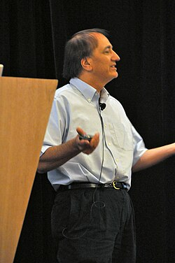

Pat Hanrahan | |
|---|---|
 Hanrahan in 2009 | |
| Born | May 8, 1955 Milwaukee, Wisconsin, U.S. |
| Education | University of Wisconsin, Madison (BS, MS, PhD) |
| Scientific career | |
| Fields | Computer graphics |
| Institutions | New York Institute of Technology Stanford University Princeton University Pixar |
| Antony Stretton | |
Doctoral students | Maneesh Agrawala, Ren Ng, Matt Pharr, Tamara Munzner, Peter Schröder |
Patrick M. Hanrahan (born May 8, 1955)[1] is an American computer graphics researcher, the Canon USA Professor of Computer Science and Electrical Engineering in the Computer Graphics Laboratory at Stanford University. His research focuses on rendering algorithms, graphics processing units, as well as scientific illustration and visualization.[2] He has received numerous awards, including the 2019 Turing Award.
Hanrahan grew up in Green Bay, Wisconsin. He attended the University of Wisconsin–Madison and graduated with a B.S. in nuclear engineering in 1977,[3] continued his education there, and as a graduate student taught a new computer science course in graphics in 1981. One of his first students was an art graduate student, Donna Cox, now known for her art and scientific visualizations.[4] In the 1980s he went to work at the New York Institute of Technology Computer Graphics Laboratory and at Digital Equipment Corporation under Edwin Catmull.[5] He returned to U.W. Madison and completed his Ph.D. in biophysics in 1985.[6][7]
As a founding employee at Pixar Animation Studios, from 1986 to 1989 Hanrahan was part of the design of the RenderMan Interface Specification and the RenderMan Shading Language.[8][9] He was credited in Pixar productions including The Magic Egg (1984), Tin Toy (1988) and Toy Story (1995).[10]
In 1989 Hanrahan joined the faculty of Princeton University. In 1995 he moved to Stanford University. In 2003 Hanrahan co-founded Tableau Software[11] and remains its chief scientist.[12][13] In February 2005 Stanford University was named the first regional visualization and analytics center for the United States Department of Homeland Security, focused on problems in information visualization and visual analytics.[14][15] In 2011 Intel Research announced funding for a center for visual computing, co-led by Hanrahan and Jim Hurley of Intel.[16]
He was the doctoral advisor of Peter Schröder and Tamara Munzner.[17]
Hanrahan received three Academy Awards for his work in rendering and computer graphics research. In 1993 Hanrahan and other Pixar founding employees were awarded a scientific and engineering award for RenderMan.[10] In 2004 he shared a technical achievement award with Stephen R. Marschner and Henrik Wann Jensen, for research in simulating subsurface scattering of light in translucent materials.[18] In 2014 he shared a technical achievement award with Matt Pharr and Greg Humphreys, for their formalization and reference implementation of the concepts behind physically based rendering, as shared in their book Physically Based Rendering.[19]
Hanrahan received the 2003 SIGGRAPH Steven A. Coons Award for Outstanding Creative Contributions to Computer Graphics, for "leadership in rendering algorithms, graphics architectures and systems, and new visualization methods for computer graphics", and the 1993 SIGGRAPH Computer Graphics Achievement Award.[20] He was inducted into the 2018 ACM SIGGRAPH Academy Inaugural Class.[21]
He received the 2006 Career Award for Visualization Research from the IEEE Technical Committee on Visualization and Graphics (VGTC) at the IEEE Visualization Conference,[22][23]
He became a member of the National Academy of Engineering in 1999,[24] a Fellow of the American Academy of Arts and Sciences in 2007 and of the Association for Computing Machinery in 2008, and received three university teaching awards at Stanford.[25]
Hanrahan shared the 2019 ACM A.M. Turing Award with Catmull for their pioneering efforts on computer-generated imagery.[5][26]
{{cite journal}}: Cite uses deprecated parameter |citeseerx= (help)
{{cite book}}: Cite uses deprecated parameter |citeseerx= (help)
{kind=link}